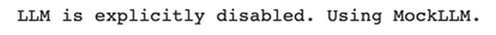
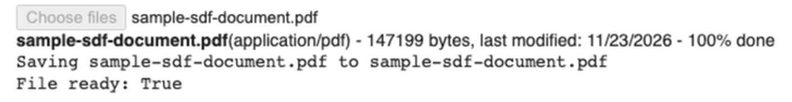
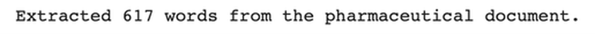
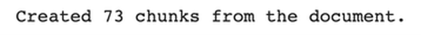
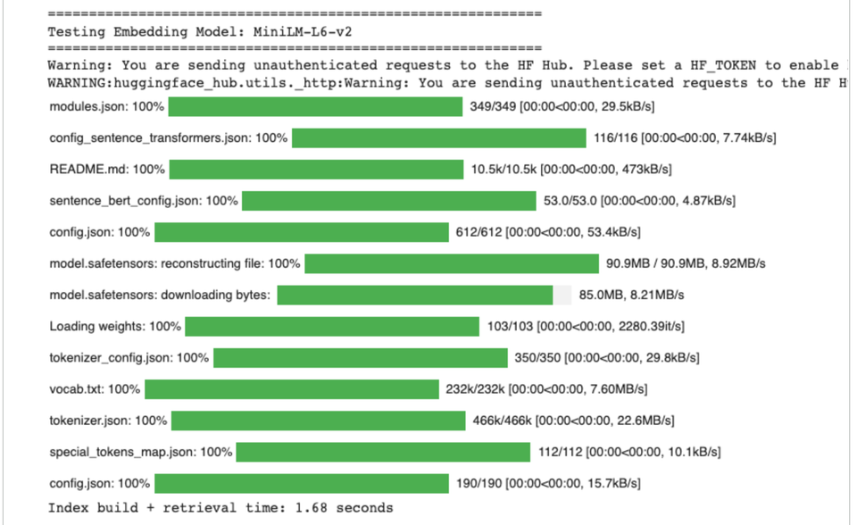
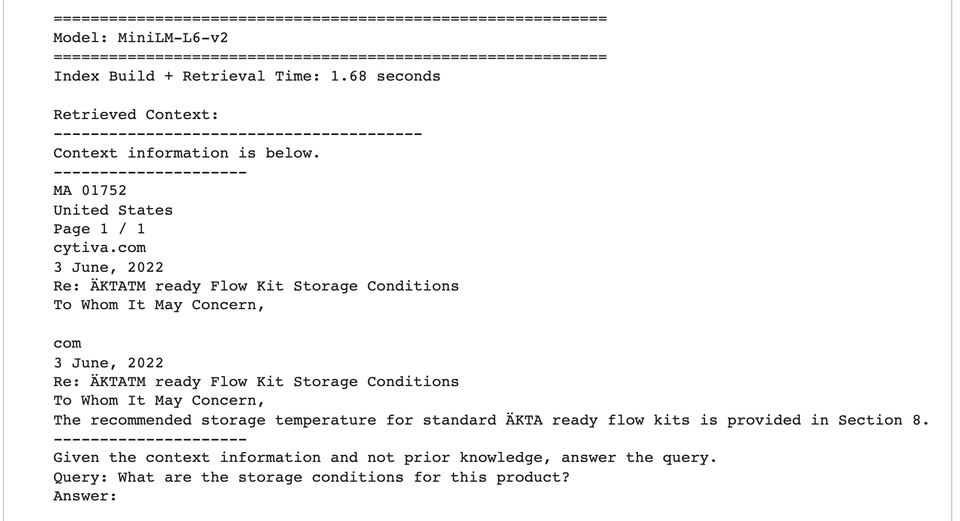
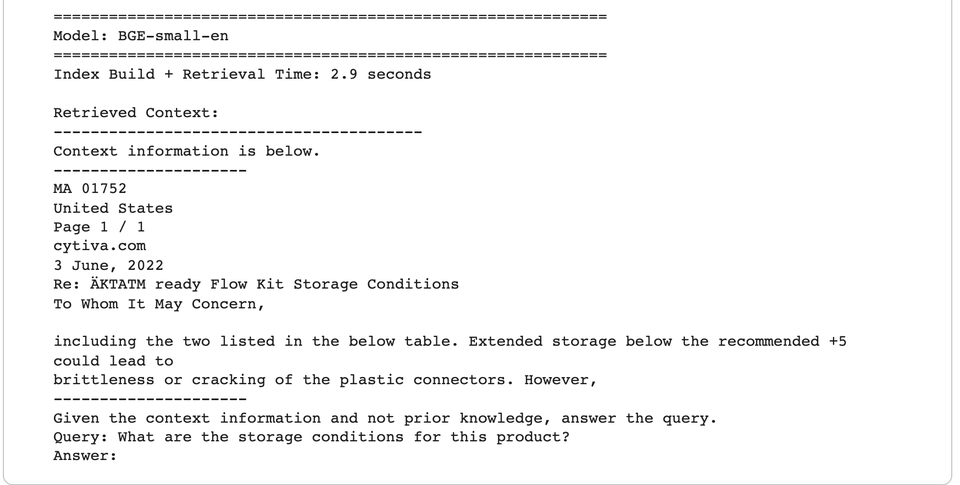

Here's the Colab notebook you'll work in, and the supplier file it reads. The supplier file holds supplier documents: a storage letter and two certificates for flow kits.
#), such as # STEP 1.Press Run on the cell that starts with # STEP 1:
# ============================================# STEP 1: Install Required Libraries# ============================================## WHAT WE'RE DOING:# Installing packages for RAG and embedding models:# - llama-index: Core RAG framework# - llama-index-embeddings-huggingface: Access to HuggingFace models# - pymupdf: PDF text extraction# - nest_asyncio: Handles async event loops in Colab## WHY THIS MATTERS:# These libraries let us test multiple embedding models easily.## WHAT YOU'LL SEE:# Installation progress (the -q flag keeps output minimal)# ============================================!pip install -q llama-index==0.14.25 llama-index-embeddings-huggingface==0.8.0 pymupdf==2.1!pip install -q nest_asyncioWhat this code does:
!pip install downloads a library (a set of ready-made code) into your Colab session. The ! sends the line to Colab's command line instead of to Python.llama-index is the toolkit your Project 5 pipeline was built with. llama-index-embeddings-huggingface lets it use embedding models from Hugging Face, a website that shares free AI models. pymupdf reads the PDF.==0.14.25, ==0.8.0 and ==2.1 pick exact versions, the ones this notebook was tested with. -q means quiet: pip prints only warnings and errors.What you'll see in Colab:
A green tick appears next to the cell, with one warning line under it. That warning is harmless: this notebook doesn't use the part it names. Keep going. In our run the cell took about 1 minute.
Press Run on the cell that starts with # STEP 2:
# ============================================# STEP 2: Import Libraries and Configure Settings# ============================================## WHAT WE'RE DOING:# Loading all required modules and configuring the environment.## WHY THIS MATTERS:# - nest_asyncio.apply() fixes event loop issues in Colab/Jupyter# - Settings.llm = None disables the LLM (we're only testing retrieval,# not generation, so we don't need an LLM for this notebook)## WHAT YOU'LL SEE:# A message about "MockLLM" - this is expected and harmless.# It just means LlamaIndex is using a placeholder since we disabled the LLM.# ============================================import nest_asyncionest_asyncio.apply()from llama_index.core import VectorStoreIndex, Document, Settings, get_response_synthesizerfrom llama_index.core.node_parser import SentenceSplitterfrom llama_index.embeddings.huggingface import HuggingFaceEmbeddingfrom llama_index.core.query_engine import RetrieverQueryEngineimport pymupdf # PyMuPDFimport time# Disable LLM - we're only comparing embedding models for retrievalSettings.llm = NoneWhat this code does:
HuggingFaceEmbedding loads an embedding model from Hugging Face by its name. SentenceSplitter cuts text into chunks, and VectorStoreIndex builds the index (the store that holds every chunk as numbers).Settings.llm = None turns off the LLM (large language model, the AI that writes answers). This notebook only compares which chunks each model finds, so no answer gets written.import time lets the notebook time each model.What you'll see in Colab:

(opens the picture full size in a new tab)As the cell's comment says, this message is expected and harmless. MockLLM is a stand-in that LlamaIndex uses because you switched the LLM off. In our run the cell took about 45 seconds.
Settings.llm now holds: MockLLM, so later cells print chunks, not answers.
Press Run on the cell that starts with # UPLOAD. It sits under the heading SECTION 2: Load the Pharmaceutical Document:
# ============================================# UPLOAD: Add the Supplier PDF to Colab# ============================================## WHAT WE'RE DOING:# Uploading the supplier PDF (sample-sdf-document.pdf) into this# Colab session, so the next cell can open it.## WHY THIS MATTERS:# Colab starts every session with an empty /content folder.# Without this upload, STEP 3 stops with a FileNotFoundError.## WHAT YOU'LL SEE:# A "Choose Files" button. Pick sample-sdf-document.pdf, then wait# for "Saving sample-sdf-document.pdf" and "File ready: True".# ============================================import osfrom google.colab import filesuploaded = files.upload()# If your browser renamed the file (for example "sample-sdf-document (1).pdf"),# save it under the name STEP 3 expectsfor file_name in uploaded: if file_name != "sample-sdf-document.pdf": os.replace(file_name, "sample-sdf-document.pdf")print("File ready:", os.path.exists("/content/sample-sdf-document.pdf"))What this code does:
files.upload() shows a Choose Files button, so you can send a file from your computer into this Colab session.for loop renames the file if your browser saved it with another name, such as sample-sdf-document (1).pdf.Click Choose Files under the cell, pick sample-sdf-document.pdf from your computer and click Open. Wait for the cell to finish.
What you'll see in Colab:

(opens the picture full size in a new tab)File ready: True means STEP 3 can open the file. If it says False, run this cell again and pick the PDF once more.
Press Run on the cell that starts with # STEP 3:
# ============================================# STEP 3: Load and Extract Text from PDF# ============================================## WHAT WE'RE DOING:# Loading the pharmaceutical SDF document and extracting all text.## WHY THIS MATTERS:# This document contains product specifications, test methods,# and quality control information - realistic content for# testing pharmaceutical document retrieval.## WHAT YOU'LL SEE:# Word count from the extracted document.# ============================================# Load the pharmaceutical SDF documentpdf_path = "/content/sample-sdf-document.pdf"doc = pymupdf.open(pdf_path)text = "\n".join([page.get_text() for page in doc])print(f"Extracted {len(text.split())} words from the pharmaceutical document.")What this code does:
pymupdf.open(pdf_path) opens the supplier file, the same way you read PDFs in Project 3.page.get_text() takes the words from each page, and "\n".join(...) joins the pages into one long piece of text.What you'll see in Colab:

(opens the picture full size in a new tab)The supplier file has 617 words across its 3 pages.
text now holds: all 617 words of the supplier file.
Press Run on the cell that starts with # STEP 4:
# ============================================# STEP 4: Split Document into Chunks# ============================================## WHAT WE'RE DOING:# Breaking the document into overlapping chunks.# We'll build the index separately for each embedding model.## WHY THIS MATTERS:# Chunking affects retrieval quality. Small chunks (50 tokens)# with overlap (50 tokens) give precise results while maintaining context.## WHAT YOU'LL SEE:# Confirmation of chunk creation.# ============================================# Define a sentence splittertext_splitter = SentenceSplitter(chunk_size=50, chunk_overlap=50)# Turn raw text into a list of Document objectsdocuments = [Document(text=text)]# Convert into nodes (smaller chunks)nodes = text_splitter.get_nodes_from_documents(documents)print(f"Created {len(nodes)} chunks from the document.")What this code does:
chunk_size=50: each chunk holds up to about 50 tokens (a token is a word or a piece of a word).chunk_overlap=50: each chunk can share up to 50 tokens with the chunk before it, so chunks that sit next to each other repeat many of the same lines. You'll spot this in STEP 6.What you'll see in Colab:

(opens the picture full size in a new tab)nodes now holds: the 73 chunks. Every model in STEP 5 builds its index from these same chunks.
In your Colab notebook, this is the part you want to change:
from llama_index.embeddings.huggingface import HuggingFaceEmbedding# Default (example) embedding modelembed_model = HuggingFaceEmbedding(model_name="sentence-transformers/all-MiniLM-L6-v2")Now change the model_name to whichever new model you want to try:
embed_model = HuggingFaceEmbedding(model_name="intfloat/e5-small-v2")Your notebook makes this swap for you. Just above STEP 5, the heading SECTION 3: Compare Embedding Models names the three models it tests:
STEP 5 then runs HuggingFaceEmbedding(model_name=model_path) once for each of them, so you don't edit the model name by hand.
Parameters are the numbers a model learned during training. 22M means 22 million. More parameters usually means a bigger model.
Press Run on the cell that starts with # STEP 5. It takes about half a minute. While it runs, read its notes at the top:
# ============================================# STEP 5: Run Embedding Model Comparison# ============================================## WHAT WE'RE DOING:# Testing each embedding model with the same pharmaceutical query# and measuring retrieval time and quality.## WHY THIS MATTERS:# Different embedding models have different strengths:# - MiniLM: Fastest, good for high-volume applications# - BGE: Best accuracy for general text# - E5: Strong semantic understanding, good for complex queries## WHAT YOU'LL SEE:# For each model: loading message, retrieval time, and top results.# First run downloads models (~30-50MB each).## IMPORTANT: We rebuild the index for each embedding model so that# both the documents AND queries use the same embedding space.# ============================================What this code does:
#, so they are notes for you. Python skips them.Here's the next part of the same cell:
embedding_models = { "MiniLM-L6-v2": "sentence-transformers/all-MiniLM-L6-v2", "BGE-small-en": "BAAI/bge-small-en-v1.5", "E5-small-v2": "intfloat/e5-small-v2"}# Pharmaceutical query about the SDF documentquery = "What are the storage conditions for this product?"results = {}What this code does:
embedding_models is a dictionary (a list of pairs): each short name points to the model's full name on Hugging Face.query is the question every model answers.results = {} starts an empty dictionary. The loop fills it with each model's chunks and time.And here's the end of the same cell:
for model_name, model_path in embedding_models.items(): print(f"\n{'='*60}") print(f"Testing Embedding Model: {model_name}") print(f"{'='*60}") # Configure the embedding model embed_model = HuggingFaceEmbedding(model_name=model_path) Settings.embed_model = embed_model # Build a fresh index with this embedding model # This ensures documents are embedded with the same model as queries start_time = time.time() index = VectorStoreIndex(nodes) retriever = index.as_retriever(similarity_top_k=2) query_engine = RetrieverQueryEngine.from_args(retriever=retriever) # Run the query response = query_engine.query(query) end_time = time.time() # Store results results[model_name] = { "response": str(response), "time": round(end_time - start_time, 2) } print(f"Index build + retrieval time: {results[model_name]['time']} seconds")What this code does:
VectorStoreIndex(nodes) rebuilds the index with each model.similarity_top_k=2 brings back the 2 closest chunks.What you'll see in Colab:

(opens the picture full size in a new tab)model.safetensors, is 90.9MB for MiniLM.The same happens for BGE and E5. Each model's part ends with one time line. Here are the three from our run, copied from the output:
Testing Embedding Model: MiniLM-L6-v2
Index build + retrieval time: 1.68 seconds
Testing Embedding Model: BGE-small-en
Index build + retrieval time: 2.9 seconds
Testing Embedding Model: E5-small-v2
Index build + retrieval time: 3.9 secondsIn our run the whole cell took about 24 seconds, most of it downloading the three models. BGE and E5 are about 133MB each, bigger than MiniLM.
results now holds: each model's 2 chunks and its time, ready for STEP 6.
Press Run on the cell that starts with # STEP 6. Here is the top of the cell:
# ============================================# STEP 6: Display Comparison Results# ============================================## WHAT WE'RE DOING:# Displaying the results from each embedding model side by side.## WHY THIS MATTERS:# This helps you choose the right model for your use case:# - Need speed? Choose the fastest model# - Need accuracy? Choose the model with best results# - Need balance? Compare time vs. quality tradeoffs## WHAT YOU'LL SEE:# For each model: total time (index build + retrieval) and the retrieved context.# ============================================print("\n" + "="*70)print("EMBEDDING MODEL COMPARISON RESULTS")print("="*70)for model, result in results.items(): print(f"\n{'='*60}") print(f"Model: {model}") print(f"{'='*60}") print(f"Index Build + Retrieval Time: {result['time']} seconds") print(f"\nRetrieved Context:") print("-" * 40) print(result['response']) print()And here's the end of the same cell:
print("\n" + "="*70)print("SUMMARY")print("="*70)print("\nModel Performance Ranking (by total time):")sorted_results = sorted(results.items(), key=lambda x: x[1]['time'])for i, (model, result) in enumerate(sorted_results, 1): print(f" {i}. {model}: {result['time']}s")What this code does:
result['response']: the retrieved context, which is the 2 chunks the model found. Because the LLM is off, the response is MockLLM's placeholder: it shows the chunks and your question, but no answer.sorted(..., key=lambda x: x[1]['time']) (a lambda is a one-line function) puts the models in order of their time, fastest first.enumerate(..., 1) numbers them from 1.What you'll see in Colab:

(opens the picture full size in a new tab)What you'll see in Colab:

(opens the picture full size in a new tab)The rest of the STEP 6 output shows E5's chunks:
============================================================
Model: E5-small-v2
============================================================
Index Build + Retrieval Time: 3.9 seconds
Retrieved Context:
----------------------------------------
Context information is below.
---------------------
MA 01752
United States
Page 1 / 1
cytiva.com
3 June, 2022
Re: ÄKTATM ready Flow Kit Storage Conditions
To Whom It May Concern,
com
3 June, 2022
Re: ÄKTATM ready Flow Kit Storage Conditions
To Whom It May Concern,
The recommended storage temperature for standard ÄKTA ready flow kits is provided in Section 8.
---------------------
Given the context information and not prior knowledge, answer the query.
Query: What are the storage conditions for this product?
Answer:The output ends with the SUMMARY, which ranks the models by time, fastest first:
======================================================================
SUMMARY
======================================================================
Model Performance Ranking (by total time):
1. MiniLM-L6-v2: 1.68s
2. BGE-small-en: 2.9s
3. E5-small-v2: 3.9sThese are the same times STEP 5 printed. Your order may be different, because the times change a little from run to run.
This reading's steps also show these two snippets. You don't need to add them, because your notebook already does both jobs:
You can run this simple experiment for each embedding:
query = "What are the storage conditions for this product?"response = query_engine.query(query)print(response)Also, print the retrieved context to see what the model is working with:
# See retrieved chunksretrieved_nodes = retriever.retrieve(query)for node in retrieved_nodes: print("-" * 80) print(node.get_text())STEP 5 runs query_engine.query(query) for each of the three models, and STEP 6 prints the chunks each one retrieved.
You'll test each embedding model on:
| Judge | Where to look in your output |
|---|---|
| Retrieval Quality | The 2 chunks between the dashed lines in STEP 6. Do they talk about storage? |
| Answer Quality | Could someone answer the question from these 2 chunks alone, or do both chunks repeat the same lines? |
| Speed | The time lines in STEP 5 and the SUMMARY at the end of STEP 6. |
| Consistency | One question can't tell you. In the Task, you'll compare the models on new questions. |
Which model do you think found the chunks you'd most want your chatbot to read? One question isn't enough to pick a winner, and that's exactly what the Task is for.